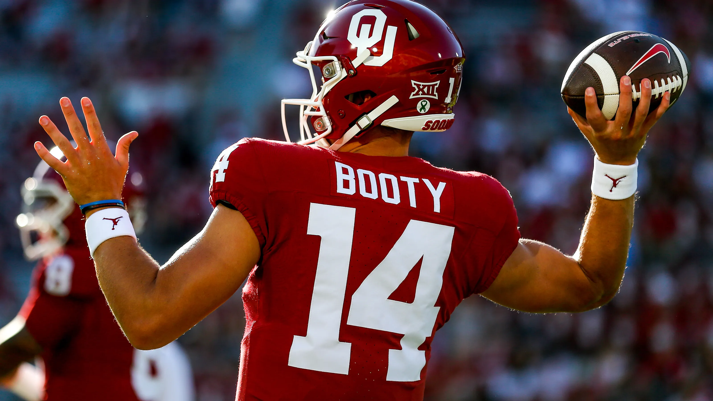

Standing 6'2" and weighing 195 pounds, Booty is known for his quarterback skills. He majors in communication and has football connections through his family. As well as his unique name, General Booty's full name is General Maximus Axel Booty, and he got his unique name from his father. According to Booty, his dad wanted a distinctive name and felt "General" would stand out, especially if he ever pursued a public career. The name has certainly caught attention, often becoming a talking point on social media and sports news, but it was meant to be memorable and powerful
Early Life
Early Life: General Booty, born on February 6, 2002, in Allen, Texas, is the nephew of former NFL quarterbacks John David Booty and Josh Booty. He attended four different high schools in California and Texas, concluding at Allen High School, where he established his football skills.
Career
Booty started his college football career at Tyler Junior College, where he played a full season. In May 2022, he transferred to the University of Oklahoma but saw limited action, appearing in just two games. In May 2024, he transferred to Louisiana-Monroe, where he currently plays as a junior. At Tyler Junior College, Booty threw for 3,410 yards and 27 touchdowns, leading his team to a 7-5 record. His strong performance earned him attention as a transfer to larger programs.
I dont know how to indent images soooooo DONT FUCKING JUDGE
